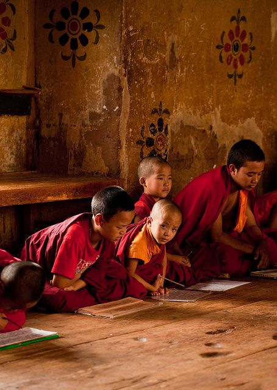

The Four Noble Truths are as follows: there is Suffering that exists in the world,
there is a cause of Suffering, there is the Cessation of Suffering
that exists in the world (Nirvana), and there is the path to the Cessation of Suffering.
Suffering can exist in three forms: physical pain or discomfort, the suffering of feeling change,
and the suffering of the inner fear of impermanence (the Suffering of Conditions). This meaning of the
last form of suffering is more subtle: according to Buddhist philosophy, everything is
impermanent, including our inner self, a concept usually thought to be eternal by Hindus, and
we need to accept this impermanence on a subconcious level to truly conquer suffering and achieve
Nirvana. Additionally, the three causes to suffering are Desire, Aversion, and Ignorance.

The Noble Eightfold Path to Enlightenment is the conventional path to the Cessation of Suffering.
It consists of the following: right view, intention, conduct, action, livelihood, effort, concentration,
and mindfulness. However, different schools of Buddhist thought disagree on the true path to enlightenment.
For example, to those who subscribe to the Mahayana movement of Buddhism believe that one must first postpone
their personal Nirvana and take the Bodhisattva Vow, promising to be reborn in a multitude of universes
until all beings are liberated from Samsara. Bodhisattvas are ultimately born in a Buddhafield, a parallel
universe where the conditions are optimal to reach Nirvana and become a Buddha. Some scholars argue that
our current universe was Siddartha's Buddhafield.